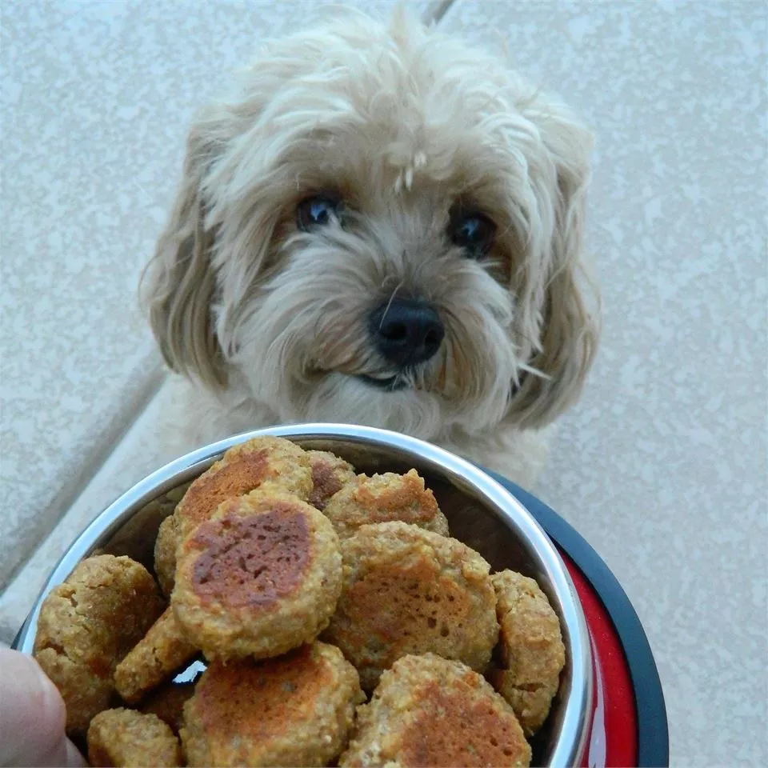

Liver Lickers

I've never wanted to lick a liver, but it's literally
all my dog thinks about- your's, too!
Fulfill their dreams and your nightmares with these
liver lickers.
Ingredients
- ¾ cup wheat germ
- ¾ cup nonfat dry milk powder
- 1 egg
- 1 tablespoon brewers' yeast
- 1 (3.5 ounce) jar pureed liver baby food
- ¼ cup water, or as needed
Steps
- Preheat the oven to 350 degrees F (175 degrees C).
- In a medium bowl, stir together the wheat germ,
milk powder, egg, yeast and liver baby food.
Add water if necessary to make a workable dough.
Drop by teaspoonfuls onto a greased cookie sheet.
- Bake for 20 minutes in the preheated oven.
Remove from cookie sheet to cool on wire racks.
Store in an airtight container in the refrigerator.
Recipe Source: All Recipes